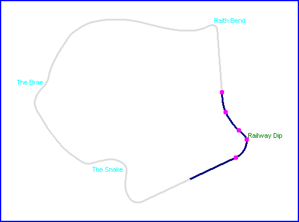
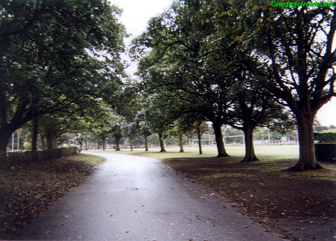
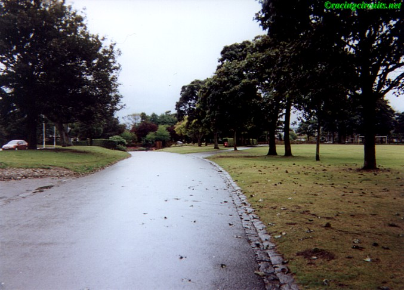
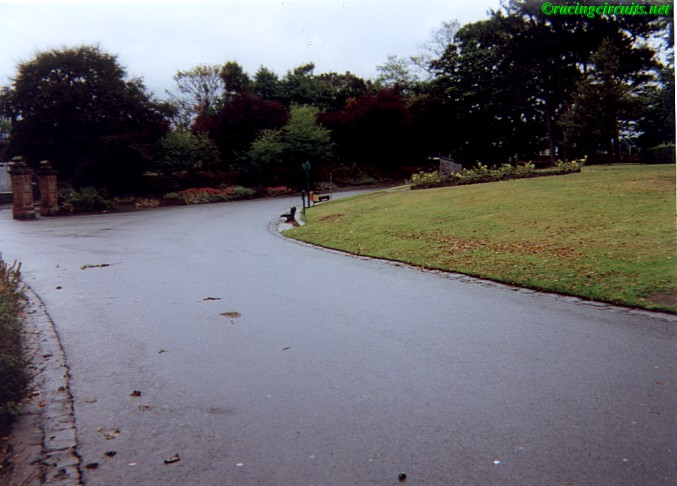
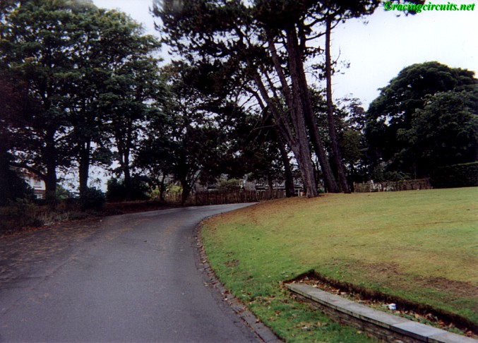
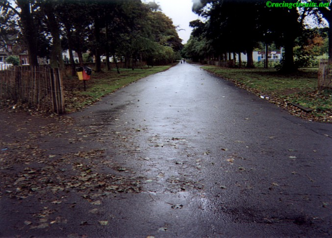
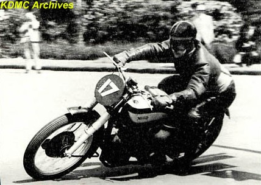

Railway Dip
|| Contents | The Snake | The Brae | Raith Bend | Railway Dip || Home ||

Click on corner names above to view photographs of that section. The dots on the
map represent where each of the photographs were taken.






©racingcircuits.net - All rights reserved.
Additional photography supplied by the Kirkcaldy and District Motor Club archives.